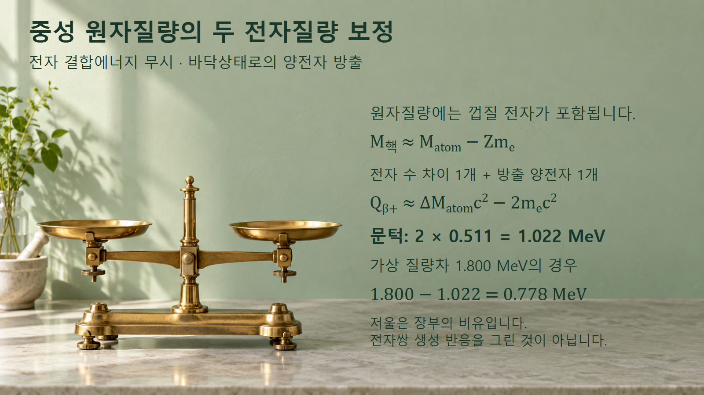
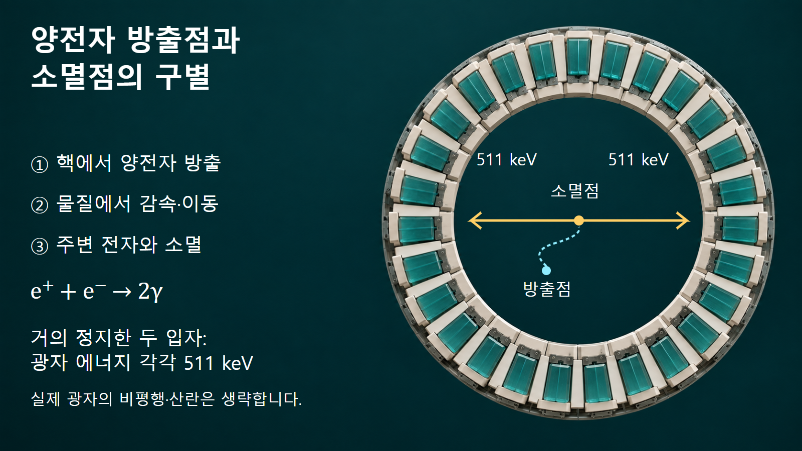

방사성붕괴와 시간 · 044
베타 플러스 붕괴
양전자 생성의 에너지 조건과 소멸광자의 검출
양전자 방출에는 질량차에 따른 에너지 조건이 필요합니다. 방출 이후의 소멸은 별개의 과정이며, 이 구분이 PET의 검출 원리를 이해하는 출발점입니다.
양성자의 변환과 양전자의 성질
베타 플러스 붕괴는 핵 안의 양성자 하나가 중성자로 바뀌면서 양전자와 전자 중성미자를 방출하는 과정입니다. 양전자는 전자와 질량이 같고 전하의 부호가 반대인 전자의 반입자입니다. 따라서 이름에 ‘양’이 들어가지만 양성자와 같은 입자는 아닙니다.
관계는 p → n + e+ + νe로 나타냅니다. 양전자의 전하는 +1이며, 중성자와 중성미자의 전하는 0이므로 처음 양성자의 +1과 합이 맞습니다. 핵자수 A는 유지되고 핵의 양성자수 Z는 하나 줄어듭니다. DOE의 베타붕괴 설명은 이 변환과 베타 마이너스 붕괴를 비교합니다.
이 식을 자유 양성자가 저절로 같은 방식으로 붕괴한다는 뜻으로 읽어서는 안 됩니다. 핵 안에서 가능한 초기·최종 상태의 에너지 조건이 충족되어야 합니다. 핵종 변화의 형식을 아는 것과 실제 붕괴가 가능한지 판단하는 것은 별개의 단계입니다.
중성 원자질량과 핵질량의 장부
핵질량으로 Q값을 구한다면 부모핵 질량에서 딸핵 질량과 방출 양전자 질량을 뺀 뒤 c2를 곱합니다. Q값은 그 전이에 쓸 수 있는 에너지이며, c는 광속입니다. 그런데 흔히 보는 원자질량표의 값은 전자껍질까지 포함한 중성 원자의 질량입니다.
전자 결합에너지를 무시하면 M핵 ≈ Matom − Zme입니다. 부모 원자에는 Z개의 전자, 딸 원자에는 Z−1개의 전자가 포함되므로 원자질량의 차이에 이미 전자 한 개의 질량이 더 들어 있습니다. 이 차이를 보정하고 방출 양전자 한 개의 질량도 빼면 Qβ+ ≈ [Matom,P − Matom,D − 2me]c2가 됩니다.
따라서 중성 원자질량 차이에 해당하는 에너지가 약 1.022 MeV를 넘어야 양전자 방출에 양의 에너지가 남습니다. AME2003 평가방법 문서 167쪽 §6.4도 이 문턱을 제시합니다. 전자질량 두 개를 빼는 것은 핵반응에서 전자와 양전자를 한 쌍으로 새로 만든다는 뜻이 아닙니다.

예시 1: 질량차에서 가용에너지 계산
중성 원자질량 차이에 해당하는 에너지를 1.800 MeV라고 가정하겠습니다. 바닥상태 전이를 생각하고 전자 결합에너지의 작은 보정은 무시합니다. 방출 가능한 운동에너지 등을 계산하면 1.800 − 1.022 = 0.778 MeV가 남습니다. 이는 가상 질량차의 예시이며 실제 핵종의 평가값은 아닙니다.
이 0.778 MeV 전부를 항상 양전자 하나가 받는 것은 아닙니다. 양전자, 중성미자, 딸핵 반동이 에너지를 나누며 양전자 에너지는 연속분포를 이룹니다. 만약 딸핵 여기상태로 가는 분기라면 여기 에너지를 추가로 빼야 합니다.
반대로 같은 방식의 질량차 에너지가 0.800 MeV라면 0.800 − 1.022 = −0.222 MeV이므로 이 근사에서 양전자 방출은 에너지상 불가능합니다. 이 결론만으로 모든 붕괴가 금지됐다고 말할 수는 없습니다. 다음 글에서 다룰 전자포획은 양전자를 새로 방출하지 않는 다른 경로입니다.
예시 2: 탄소-10의 붕소-10 전환
DOE의 원본 비교 그림에 나온 탄소-10은 양성자 6개와 중성자 4개를 가집니다. 양성자 하나가 중성자로 바뀌면 양성자 5개, 중성자 5개인 붕소-10이 됩니다. 이를 106C → 105B + e+ + νe로 적습니다.
질량수 합은 10으로 그대로이며 핵의 전하는 +6에서 +5로 줄지만 방출 양전자의 +1을 더하면 보존됩니다. 앞의 가상 Q값 0.778 MeV를 이 탄소-10 사건의 실제 에너지로 가져다 쓰면 안 됩니다. 핵자수 예시와 질량차 계산 예시는 서로 다른 목적을 가집니다.
양전자 감속과 두 광자 소멸
생성된 양전자는 주변 물질과 상호작용하며 이동하고 에너지를 잃습니다. 이후 주변 전자와 만나 소멸할 수 있습니다. 두 입자가 거의 정지한 상태에서 광자 두 개로 소멸하는 경우, 합계 정지에너지 2 × 0.511 = 1.022 MeV가 두 광자에 나뉘어 각각 0.511 MeV, 즉 511 keV가 됩니다.
Fermilab의 소멸 설명은 두 광자가 반대 방향으로 나가야 에너지와 운동량을 함께 보존할 수 있음을 설명합니다. 여기서 511 keV는 양전자가 처음 방출될 때의 운동에너지 고정값이 아닙니다. 양전자의 초기 운동에너지와 이후 소멸광자의 에너지는 서로 다른 단계의 값입니다.
모든 소멸 사건을 언제나 정확히 반대 방향의 두 광자로만 단순화할 수는 없습니다. 이 설명은 거의 정지한 전자·양전자의 대표적인 두 광자 소멸을 기준으로 하며, 실제 운동상태와 다른 소멸 경로는 정밀 해석에서 구별합니다.
PET의 방출점·소멸점·검출선
양전자방출단층촬영(Positron Emission Tomography, PET)은 양전자방출핵종의 공간 분포를 영상화하는 기술입니다. IAEA 자료 11~15쪽 §2.2는 방출·소멸·광자 이동·검출을 구분합니다. 검출기는 양전자를 직접 따라가는 대신 서로 맞은편에서 거의 동시에 도착한 소멸광자를 연결합니다.
양전자는 방출 직후 그 자리에서 항상 소멸하지 않고, 물질 속을 일정 거리 이동할 수 있습니다. 따라서 PET의 두 광자를 연결한 선은 이상적으로 소멸점을 지나지만 최초 핵붕괴점을 반드시 지나지는 않습니다.

이 이동거리와 광자의 완전하지 않은 반대 방향성은 영상의 공간분해능에 영향을 줍니다. 산란, 검출기 크기와 응답도 함께 작용합니다. 그러므로 소멸광자 두 개를 검출했다는 사실만으로 한 사건의 원래 핵붕괴 위치를 정확한 점 하나로 정할 수는 없습니다.
서로 다른 에너지 기준의 정리
베타 플러스 붕괴에서는 양성자에서 중성자로의 변환과 양전자 생성을 먼저 설명해야 합니다. 질량표를 사용할 때는 핵질량인지 중성 원자질량인지 확인하고, 여기상태와 전자 결합에너지 보정의 범위도 구분합니다.
그다음 양전자의 이동·감속과 소멸을 별도 과정으로 이어 읽습니다. 질량차의 1.022 MeV 보정, 사건마다 달라지는 양전자 운동에너지, 대표적인 소멸광자의 511 keV는 서로 바꾸어 쓸 수 없는 값입니다. 아래 표는 같은 숫자가 등장해도 무엇을 계산하는지 먼저 정해야 하는 이유를 정리합니다.
| 값 | 적용 위치 | 해석 |
|---|---|---|
| 1.022 MeV 보정 | 중성 원자질량 차이로 β⁺ Q 계산 | 전자 수 차이와 방출 양전자 질량 |
| 양전자 운동에너지 | 개별 베타붕괴 사건 | 중성미자·반동과 분배 |
| 511 keV | 거의 정지한 두 광자 소멸 | 각 광자의 에너지 |
| 검출기 측정에너지 | 광자가 물질과 상호작용한 뒤 | 산란·검출 응답의 영향 |